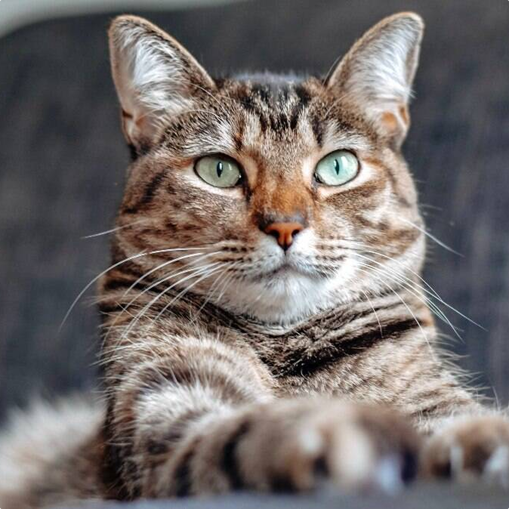
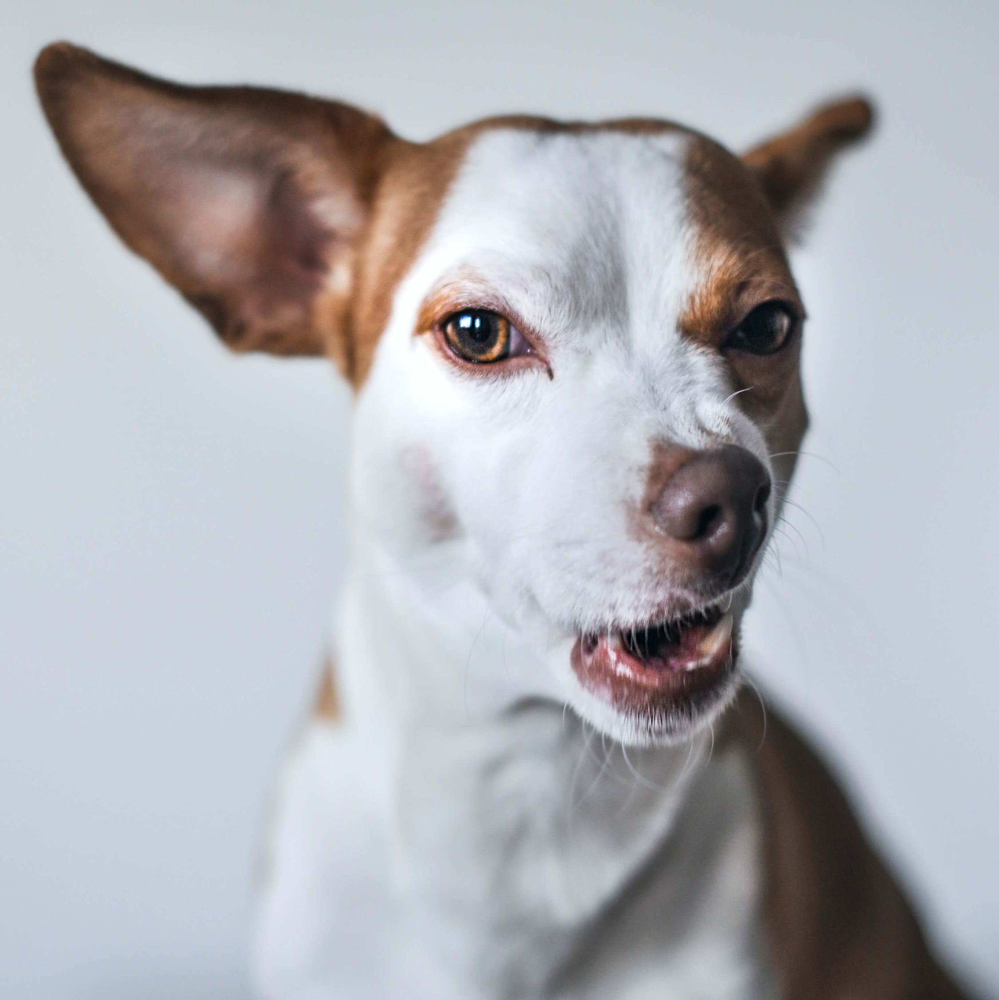

Com o Busca Pet é Fácil!
Cadastre-o para ajudar o dono a encontrá-lo.

Nos forneça as informações necessárias que ajudamos você!

Cadastre-o e nós publicamos o cartaz para você!
Filtre por categoria
Perdido
Adoção
Encontrado
Descrição do animal...
Detalhes da fuga aqui...